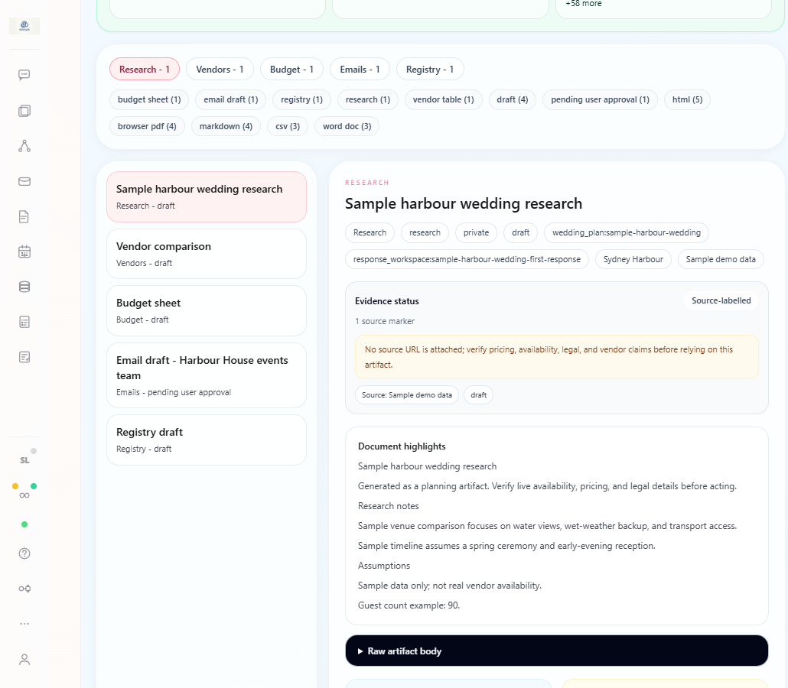

Ask most engaged couples where their wedding "lives" and you'll get an uncomfortable pause, followed by a list: the budget is in a spreadsheet, the guest list is in a different spreadsheet, ideas are saved as screenshots in Notes, the run sheet is a Google Doc, and the actual coordinating happens in a group chat that's scrolled past the useful part weeks ago. None of these talk to each other. Every one of them is a little bit out of date the moment something changes.
That's not a discipline problem. It's an architecture problem. When your plan lives in five places, keeping it accurate means manually re-typing the same fact into five places every time it changes — and everyone eventually just... stops.
What "connected" actually means here
It doesn't just mean everything sits in the same app, the way five browser tabs sit in the same window. It means a single decision can update several different views of your wedding at once, because they're not actually separate things — they're different angles on the same underlying plan. Your budget, your calendar, your task list, and your notes are all looking at the same set of facts, not five separate copies of them.
A venue decision doesn't stay in one box
Say you finally confirm your venue. In a disconnected setup, that's a single fact you now have to manually copy in several directions: update the budget spreadsheet with the real quote, add the deposit due date to a calendar, remember to follow up about the contract, and update whatever notes reference the venue as "TBC."
In a connected plan, confirming that one decision is the whole job. The budget line moves from estimated to confirmed with the real number attached. The deposit due date appears on your timeline on its own, because it was part of the same decision, not a separate task you have to remember to create. A follow-up for the signed contract shows up without you writing it down anywhere. One decision, several views updated — because it was never actually five separate pieces of information to begin with.
The point isn't that everything is in one app. It's that a decision only has to be made once, instead of once and then re-entered four more times.
Your budget already knows what your calendar knows
A budget that doesn't know about deadlines is just a list of numbers. The useful question isn't "what's our total spend so far" — it's "what's due in the next two weeks, and do we actually have it covered." That question only has a fast answer when the budget line for your caterer and the deposit due date for your caterer are the same underlying fact, not two things you're trusting yourself to keep in sync.
This is also where hidden costs get caught early instead of late. A vendor quote that's missing a delivery fee or an overtime rate isn't just a budget problem — it's a timeline problem too, because it changes what "confirmed" actually means for that date. When the two are connected, a warning on one shows up as a warning on the other, instead of surfacing as a surprise on the invoice.
A note isn't just text sitting there
Most wedding planning starts as talk, not data — "what if we did the ceremony on the beach instead" isn't a budget line or a calendar event yet, it's a thought. The problem with keeping thoughts in a separate notes app is that they stay thoughts forever, disconnected from the plan they're actually about.
A connected plan treats that same sentence as the start of a real decision: it sits next to the venue options it affects, the budget it would change, and the weather-backup question it raises — so when you're ready to actually decide, everything relevant is already sitting together instead of scattered across three apps you'd have to reopen and cross-reference by hand.
Change it once, and it's changed everywhere
Guest counts move. A lot. Every time yours does, it touches catering costs, table and seating plans, and sometimes venue capacity limits — three separate updates in a disconnected setup, and three separate chances for one of them to quietly not happen. In a connected plan, updating the guest count once is the whole task: the catering estimate recalculates, the seating plan flags itself for review, and nothing downstream is left holding a stale number because there was never a separate copy of it to forget about.
What this looks like day to day
In practice, this means your OmnyID wedding workspace is organised around categories — budget, guests, vendors, timeline, legal, and more — but they're not separate silos. They're different rooms in the same house, looking out at the same set of decisions from different angles. Open the budget and you can see which line items have an open task attached. Open the timeline and you can see which dates are tied to a budget deadline. Nothing needs to be re-typed to show up in both places, because it was only ever one fact.

That's the actual promise, in plain terms: make a decision once, and let the plan carry it everywhere it matters — so "did we already handle that" stops being a question you have to go digging for an answer to.